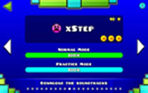
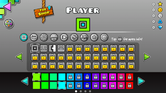

Geometry Dash is fun because it takes alot of time to become good at it and once you do become good at it becomes very easy. There is
a practice mode in Geometry Dash which helps you become good at the leval and this makes you restart where you died.
There are many challenges in the game including trying to get coins and unlocking achivements for example unlocking a new
colour.
You are also able to create challenges and share them where other people playing the game can rate them. In this game
you can also play other levals that other players have designed these levals are organized by difficulty and you are able
to chose how difficult you want the leval to be. Some levals that other people designed can also be automatic meaning you don't
have to do anything.
Geometry Dash also has an amazing soundtrack for every different leval. you are able to download this soundtrack as well.

This image up top shows how the levals in Geometry Dash are set up with the difficulty shown in an an emoji
meaning the harde the leval is the harder the emoji would show. It also shows how it has a practice mode and an actual mode. You can also tell
that it has coins to collect this leval and how many stars you would earn after you complete the leval. The stars you earn after
completeing the leval can determine how many achievments you unlock.

This image up top shows how the icons that you unlock and how many there are. This picture also shows
the different icons you can unlock and the different colours.